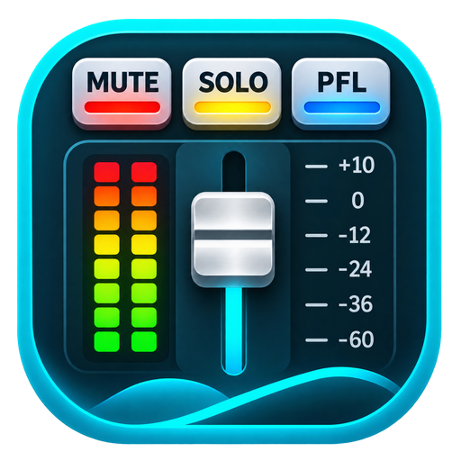
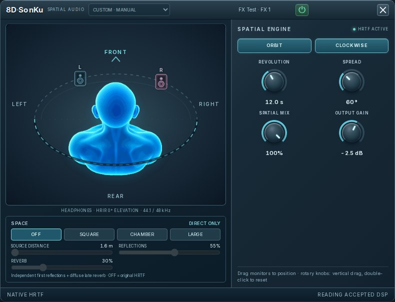
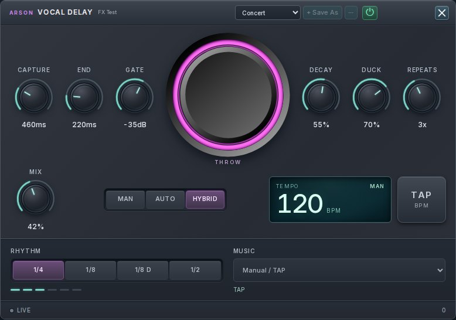
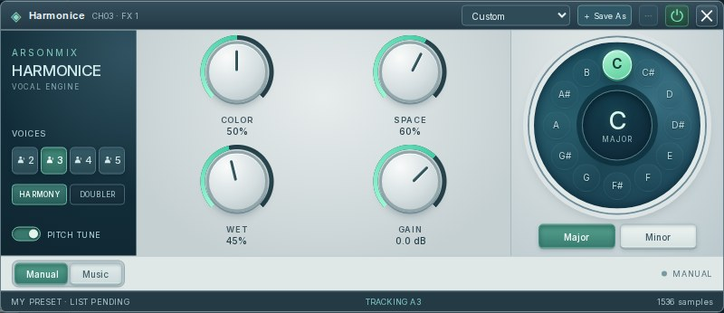
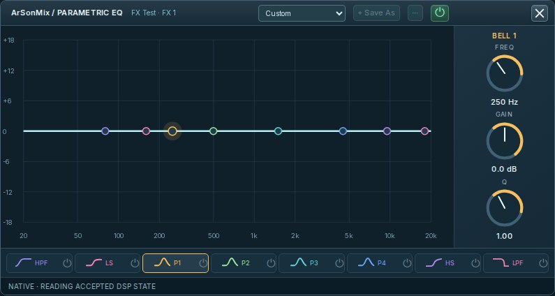
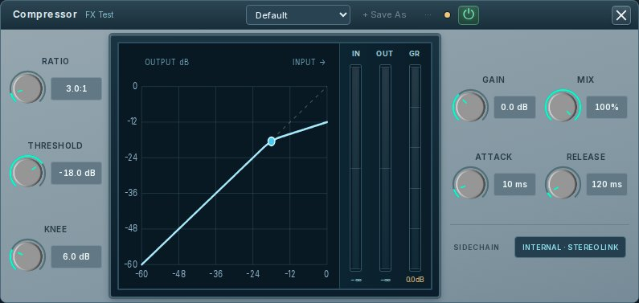
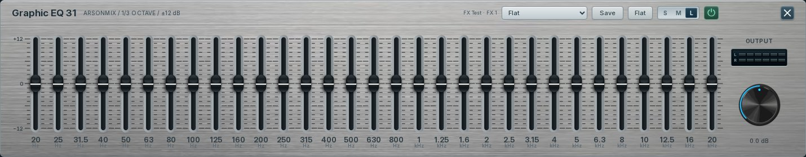
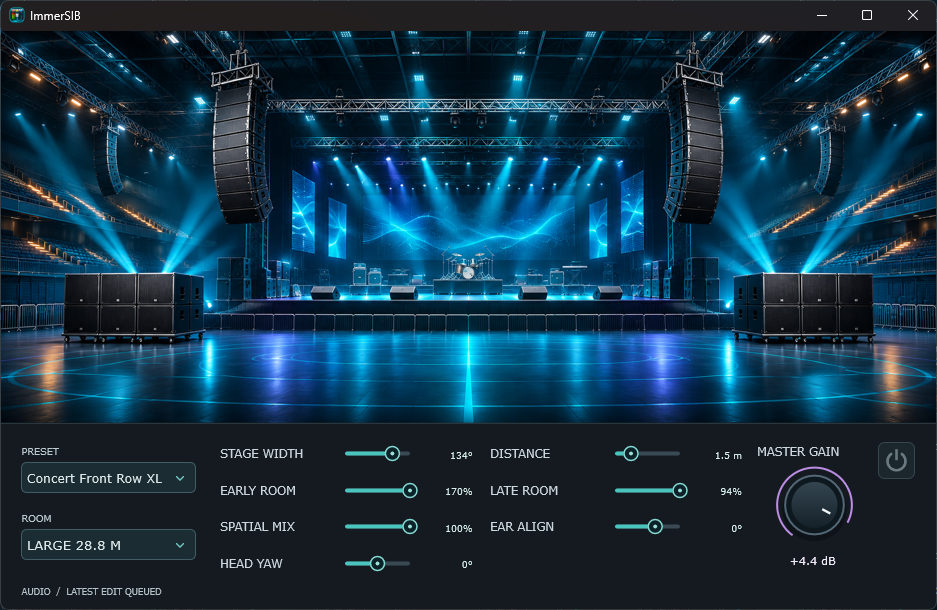
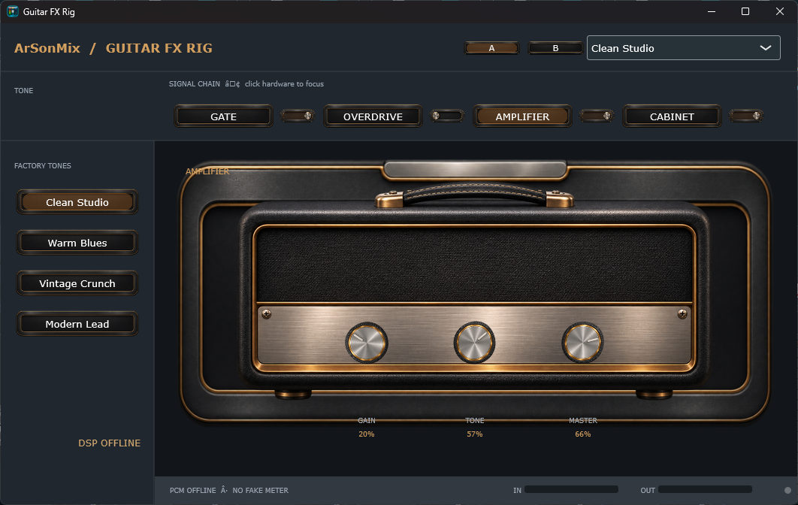

Channel-first mixing
Set up your channels, adjust gain and levels, and shape the flow of every signal.

Mix vocals, instruments and music in one lightweight, free, open-source Windows console. Route with WIRE, shape your sound with built-in FX and VST3, and save your setup as a .smix session.
Free to download · Compact installer · Windows 10/11 · No sign-up required
Check system requirementsExplore every channel, effect and connection in one streamlined mixing console.
Explore the interface online, then bring it to life with your audio interface in the desktop app.
Bring your microphones, music and sound card together with straightforward controls and flexible routing.
Set up your channels, adjust gain and levels, and shape the flow of every signal.
From concert space and moving sound to harmonies, delays, guitar tone, EQ and dynamics.
Keep music and mixing in one place, with track key and tempo information at hand.
Eight individual tools for vocal harmony, delay, 8D spatial audio, EQ, compression, concert space and guitar tone—each with its own guide.

Browse a dedicated explanation for each built-in audio effect, then explore the full mixer workflow online. Audio processing happens in the Windows app.
Explore the interactive digital mixerExplore binaural movement and orbit-style placement for 8D audio listening on headphones.
Explore effectCreate expressive echoes and phrase throws with timing and dedicated THROW controls.
Explore effectBuild vocal harmonies and doubling with a musical key wheel and layered-voice controls.
Explore effectShape individual channel frequencies and inspect the visual EQ response curve.
Explore effectControl dynamic range using a visual transfer curve and compression parameters.
Explore effectAdjust thirty-one labeled frequency bands in a dedicated hardware-style equalizer.
Explore effectDiscover concert, arena and cinema listening scenes, with stage width and room controls.
Explore effectExplore gate, overdrive, amplifier and cabinet sections and factory tone choices.
Explore effectA closer look at the controls behind your vocal, spatial and tone tools. Select an effect to open its own guide, controls and full-size screenshot.

Vocal DelayVOCALS / CREATIVE DELAY
HarmoniceVOCALS / HARMONY
Parametric EQTONE / FREQUENCY
CompressorDYNAMICS / CONTROL
Graphic EQ 31TONE / 31 BANDSThese six editors are original native WebView resources captured through controlled Chromium rendering; they are not hardware audio test results.
One authentic Windows editor screenshot for each newer effect. The ImmerSIB guide contains all six listening-scene images, without loading them on this homepage.

ImmerSIBALL SIX SCENES IN THE GUIDE ↗
Guitar FX RigCLEAN STUDIO / WINDOWS ↗Owner-provided Windows UI screenshots. The Guitar FX screen shows DSP OFFLINE; neither screenshot proves hardware operation or installed-release parity.
Connect your interface, add a channel and discover how easy it is to start shaping sound.
Get the verified Windows installer, extract the ZIP, and run Setup. No account is needed.
Select your actual driver and output in audio setup. Start at a low listening level.
Set a channel level, check routing, try an effect, and save your first .smix session.
The latest verified Windows alpha preview is listed below and updates automatically after an approved public release. Earlier Linux/macOS builds may also be available. On Windows, download the installer ZIP, extract it, and run Setup. Pick your platform to get started.
Enjoy 8D-SonKu P9.9, ImmerSIB's seven concert scenes (including Concert Front Row XL), Harmonice, Vocal Delay, Guitar FX, WIRE routing and more.
A lightweight native mixer with a compact download. No dedicated GPU or SSD required. Even older PCs are worth trying with a simple mix.
Small download: the exact Windows installer ZIP size is shown on the download card. Installed files, temporary extraction, updates and WebView2 (if missing) need additional space.
| Component | Basic mixing (try on older PCs) | More effects / larger sessions |
|---|---|---|
| CPU | Older 64-bit dual-core Intel or AMD CPU (try first) | Modern quad-core or better |
| RAM | 4 GB (try light sessions); 8 GB preferred | 8 GB or more; 16 GB helpful for streaming |
| Storage | HDD or SSD; space for download, extraction and installation | Extra space only as needed for recordings, plugins and projects |
| Graphics | Integrated graphics | Integrated graphics |
| Display | 1366 × 768 suggested | 1920 × 1080 or higher for more workspace |
| Operating system | Windows 10 (1809+) / 11 x64 | Windows 11 x64 |
| Runtime | Microsoft Edge WebView2 Runtime | Microsoft Edge WebView2 Runtime |
| Audio driver | Compatible WASAPI or ASIO | Native ASIO driver preferred |
| Audio setup | 48 kHz, 256–512 samples to start | 48 kHz, 128–256 samples if stable |
Start with karaoke, playback or a few vocal channels. Add EQ, compression and reverb as needed. More channels, Harmonice, ImmerSIB, external VST3 and video streaming can require more CPU and memory.
These are starting-point suggestions, not certified minimum specifications. Low-spec PCs have not yet been qualified across physical test machines. If audio crackles, try a larger buffer or fewer heavy effects. No guarantee of dropout-free audio on every PC.
Windows 10/11 · 64-bit
Checking package…Linux · 64-bit
Checking package…Apple Silicon and Intel
Checking package…Your ideas help shape the next version. Tell us what you love, what you'd like to see and how ArSonMix fits your workflow.
Downloads are open to everyone; sharing feedback on GitHub requires sign-in.
Try the interactive mixer, then download the desktop app and make it your own.